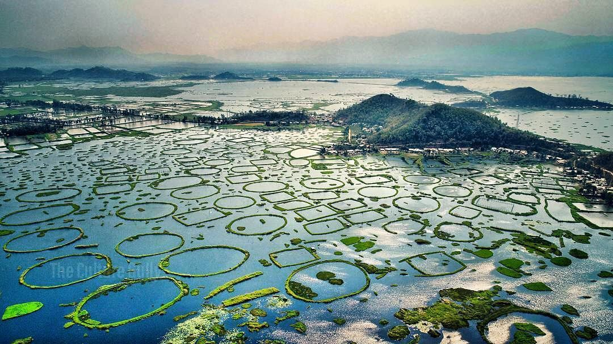

Manipur
"The Jewel of India"
Quick Facts
Popular Tourist Attractions
Loktak Lake
Famous for its phumdis (floating islands) and natural beauty.

Khonghampat Orchidarium
Houses rare and vibrant orchid species of the region.
Kangla Fort
Historic royal palace with spiritual and cultural significance.
Nature & Wildlife
Home to the endangered Sangai deer at Keibul Lamjao National Park—the only floating national park in the world.
Famous Personalities
- Mary Kom: Olympic medalist and boxing legend.
- Irom Sharmila: Civil rights activist.
- Ratan Thiyam: Renowned theatre director and playwright.
Local Handicrafts
Renowned for bamboo and cane products, traditional textiles like phanek and moirangphee, and black pottery from Longpi.
Climate
Subtropical climate with mild winters, moderate summers, and significant rainfall during the monsoon season.
Culture & Festivals
Festivals
Yaoshang (Holika), Lai Haraoba, and Cheiraoba are major cultural celebrations.
Dance & Music
Ras Leela is a classical dance form that showcases devotion and grace.
Cuisine
Includes dishes like eromba, ooti, nga thongba, and aromatic herbs.
Clothing
Traditional attire includes phanek for women and dhoti-kurta for men, often adorned with handwoven shawls.
Did You Know? Manipur is considered the birthplace of modern polo!
Note: Information may be subject to updates. Kindly notify us of any discrepancies.